Alles auf eine Taste
Programme starten, Websites öffnen, Tastenkombis und Medientasten senden, Text einfügen, Ordner öffnen, CMD- oder PowerShell-Befehle – oder mehrere Schritte nacheinander mit Pausen.
Zwei kostenlose Apps für Windows: Das Function Board ist dein digitales Stream Deck – Programme, Websites, Hotkeys und Textbausteine auf Knopfdruck. Das Sound Board regelt die Lautstärke jeder App wie ein Mischpult. Einzeln stark, zusammen ein Team.
Leg dir Tasten für alles an, was du ständig brauchst. Das Gerät neigt sich zu deiner Maus, jede Taste leuchtet beim Drücken – und mit einem Hotkey klappt alles sogar mitten im Spiel.
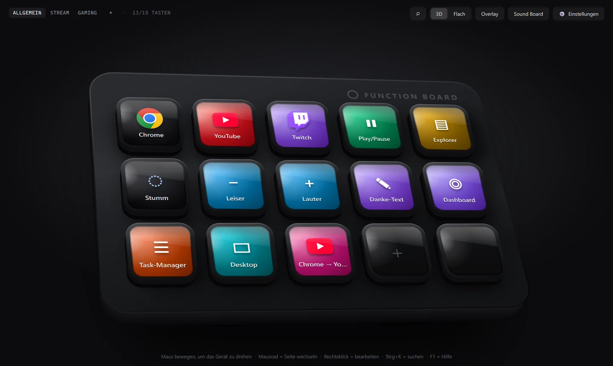
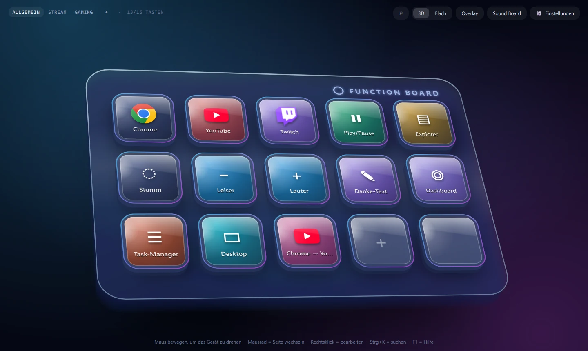
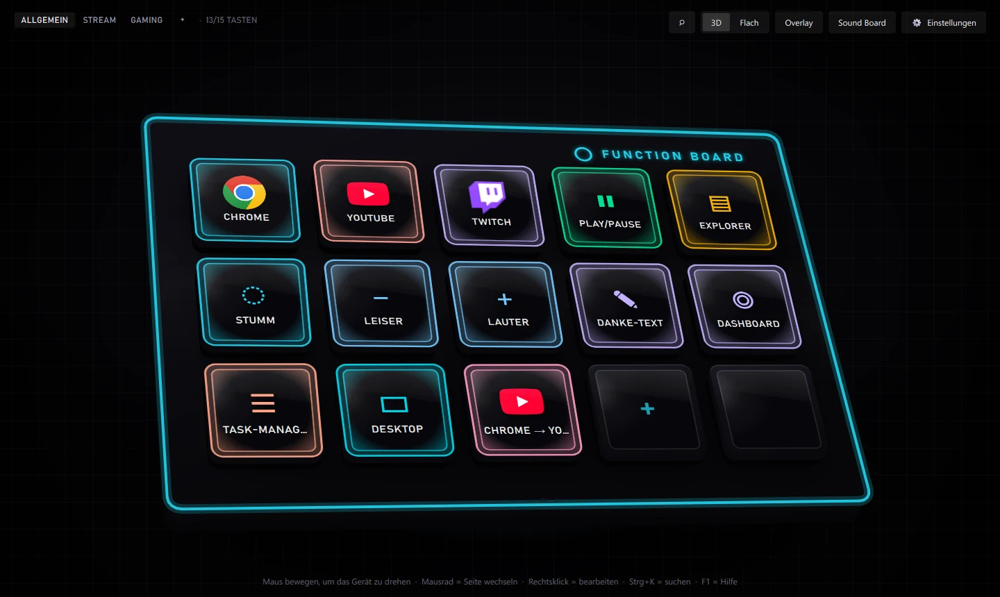
Programme starten, Websites öffnen, Tastenkombis und Medientasten senden, Text einfügen, Ordner öffnen, CMD- oder PowerShell-Befehle – oder mehrere Schritte nacheinander mit Pausen.
Jede Taste bekommt auf Wunsch ein eigenes Tastenkürzel. Das funktioniert überall – auch wenn das Fenster minimiert im Infobereich wartet.
Twitch, YouTube, deine Spiele und Programme bekommen von selbst ihr passendes Logo. Oder du nimmst ein Emoji oder ein eigenes Bild.
Ein kleines Board, das über allen Fenstern schwebt: frei belegbar oder automatisch mit deinen meistgenutzten Tasten. Verschieben, in eine Ecke setzen, durchklickbar machen – und mit Strg+Alt+O ein- und ausblenden.
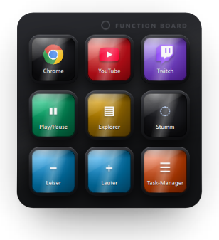
Tasten per Drag & Drop sortieren – auch auf andere Seiten: auf einen Reiter, an den Rand oder auf „+“. Dazu Strg+Z zum Rückgängigmachen und Strg+K für die Schnellsuche.
Gezeichnet von deiner Grafikkarte, mit bis zu 240 Bildern pro Sekunde. Lieber schlicht? Ein Klick auf „Flach“.
Lauter, leiser, stumm, Profil wechseln – als Taste, mit Live-Lautstärke direkt auf dem Display.
MK II, Glas oder Arcade – passend zum Sound Board, Wechsel sofort. Alles auf Deutsch oder Englisch. Neue Versionen meldet die App selbst.
Beim ersten Start führt dich ein Assistent durch fünf kurze Schritte – mit sanften Animationen und einer Live-Vorschau.
Später jederzeit erneut: Einstellungen → „Einrichtungs-Assistent erneut starten“. Wer schon Tasten hat, behält sie – „Meine Tasten behalten“ ist dann vorausgewählt.
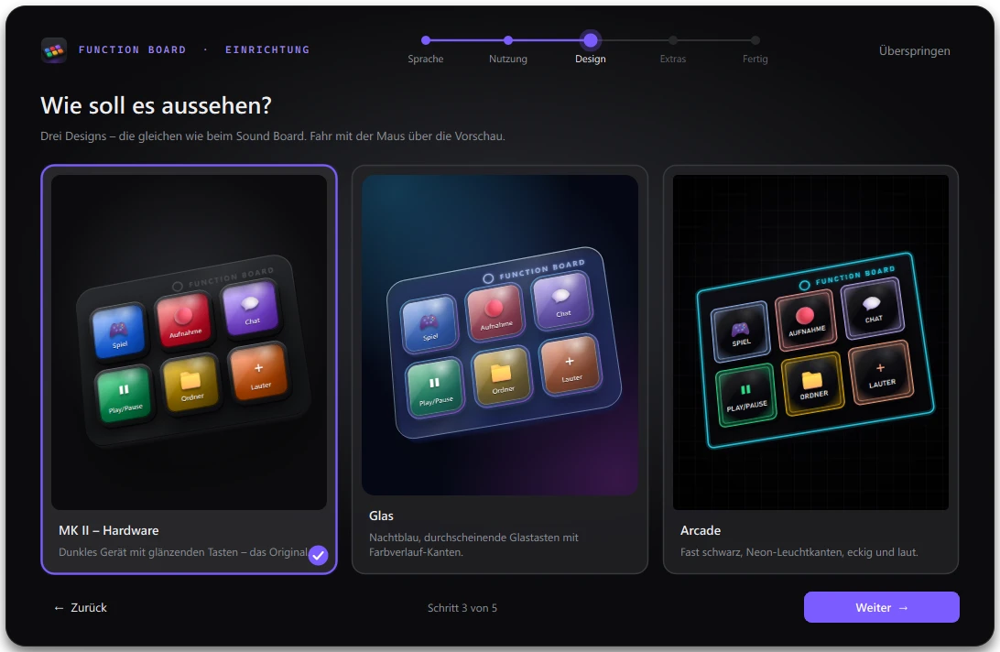
Fasse Apps zu Kanälen zusammen – Game, Chat, Musik, Browser – und regle sie getrennt, wie an einem echten Mischpult. Nie wieder ist das Spiel lauter als deine Freunde im Voice-Chat.
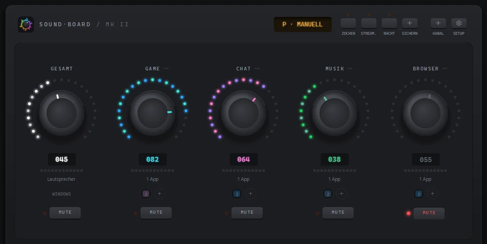
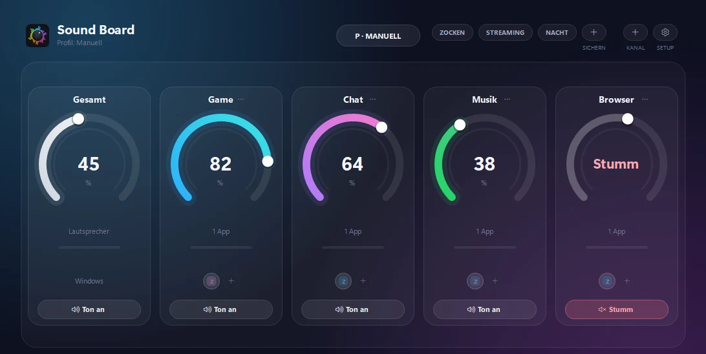
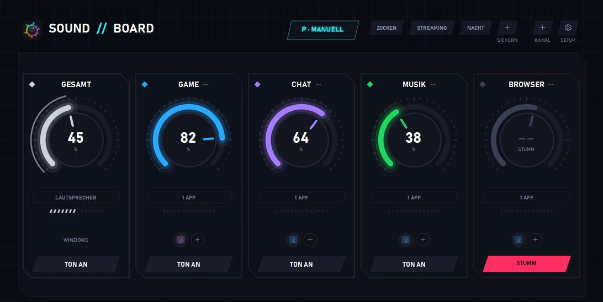
Jeder Kanal hat seinen eigenen Regler und Stumm-Knopf. Mausrad am Regler = ±5 %.
Zocken, Streaming, Nacht – alle Lautstärken auf einmal umschalten, auch mit Strg+1–9.
Spiel oder Musik werden von selbst leiser, sobald im Chat jemand spricht – und danach wieder lauter.
Lauter, leiser und stumm für jeden Kanal auf eigene Hotkeys legen.
Ein Assistent fragt beim ersten Start nach Sprache (Deutsch/Englisch), Einsatz – Zocken, Streaming, Musik oder Arbeit – und Design.
Ein Klick aufs Symbol im Infobereich öffnet kompakte Regler – ohne das große Fenster. Beim Verstellen zeigt eine kleine Anzeige die neue Lautstärke.
Läuft beides, steuert das Function Board dein Sound Board – per Taste, Hotkey oder Overlay, auch mitten im Spiel.
Mit richtigem Installer – Startmenü, Desktop-Symbol, Deinstallation unter „Apps“ und automatische Updates. Einmal installieren, danach startest du alles übers Startmenü.
Dein digitales Stream Deck
Neu in 2.5: Ein echter Windows Installer (.msi) – installiert für alle Benutzer nach C:\Programme, den Ordner wählst du selbst. Hast du schon eine ältere Version, wird sie automatisch übernommen – deine Tasten bleiben.
a23be2ff2298292b51d9799d0ead633cc3c7c9c9d3b7921eb674cc3135dadc0aaf5fb8f1851243b1f88f28c8c4cdcbdfd7e9f6a407d95e97b061a02c2b79e99dLautstärke pro App, wie am Mischpult
Neu in 2.0: Einrichtungs-Assistent, drei Designs (MK II, Glas, Arcade) und Englisch als zweite Sprache – und jetzt auch mit richtigem Installer.
a8656b06cbdba8e623e535e1c1f4fff9d2dbb5e6af9619b2609641c9cd30ecf14b7940b25ae7bb3bef99d40906277e41dadf45508f98dabc7e0b0a0c77b17948Portabel: Lege die .exe in einen eigenen Ordner, z. B. Dokumente\Function Board – dort speichert sie auch ihre Einstellungen. Installiert liegen sie in %APPDATA% und bleiben bei Updates erhalten.
Die .msi ist der Installer von Windows selbst: Doppelklick, Ordner wählen, Windows fragt nach Administratorrechten – fertig. Wie bei einem großen Spiel kommt alles mit, was dazugehört.
C:\Programme\Function Board\ ├── FunctionBoard.exe das Programm ├── _internal\ Python, Qt, Bibliotheken ├── README.md die Anleitung ├── install.json „per Installer eingerichtet“ │ │ Quellcode (Standard, abwählbar): ├── main.py · start.bat · requirements.txt ├── softdeck\ der Quellcode ├── assets\ · tests\ └── installer\ Setup-Skripte
Deine Tasten und Einstellungen liegen pro Benutzer getrennt davon in %APPDATA%\FunctionBoard – so bleiben sie bei jedem Update erhalten.
Lade den Installer herunter – FunctionBoard.msi bzw. SoundBoard-Setup.exe. Er bringt alles mit: Programm, Bibliotheken, Symbole, Anleitung und auf Wunsch den Quellcode.
Doppelklick, Ordner wählen, „Installieren“ – Windows fragt nach Administratorrechten, bestätige mit „Ja“. Warnt Windows vorher vor dem neuen Programm:
Ab jetzt startest du die App übers Startmenü oder das Desktop-Symbol – den Installer brauchst du nicht mehr. Ein kurzer Assistent richtet alles ein, neue Versionen meldet das Function Board selbst.
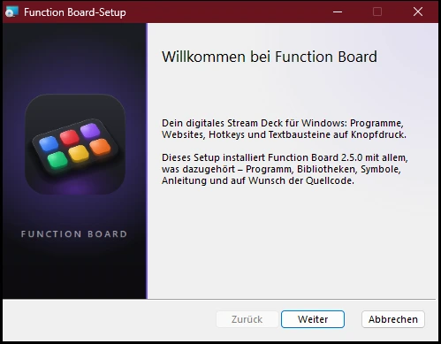
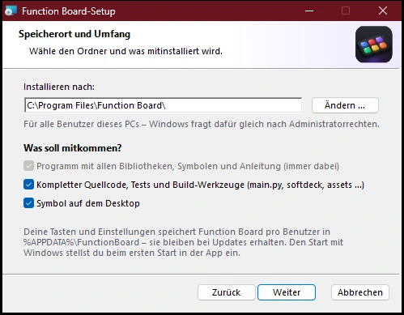
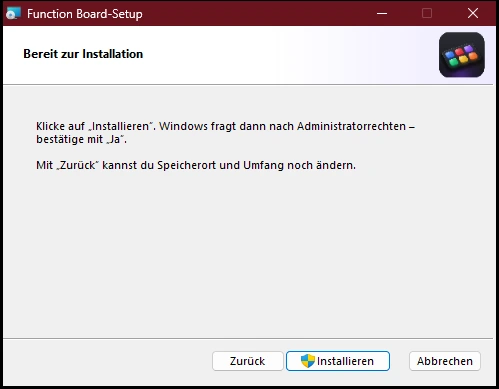
Alles Wichtige zu Download, Sicherheit und Einstellungen – kurz und ehrlich beantwortet.
Nein. Beide sind kostenlos – ohne Abo, ohne Werbung, ohne Anmeldung.
Nein, jede läuft für sich allein. Zusammen kann das Function Board aber dein Sound Board steuern – zum Beispiel „Game lauter“ oder „Profil Nacht“ per Taste.
Windows SmartScreen warnt bei neuen Programmen, die noch nicht digital signiert sind. Über
„Weitere Informationen“ → „Trotzdem ausführen“ startest du das Setup. Wer sichergehen will, vergleicht die
SHA-256-Prüfsumme im Download-Bereich, z. B. mit Get-FileHash .\FunctionBoard.msi in PowerShell.
Das Function Board als vollständiger Programmordner (Programm, Python-Laufzeit, Qt und alle
Bibliotheken), die Anleitung und – wenn du das Häkchen drin lässt – der komplette Quellcode mit Tests und Build-Werkzeugen.
Nicht dabei sind persönliche Dinge: Deine Tasten legt die App beim ersten Start selbst in
%APPDATA%\FunctionBoard an. Wie der Ordner danach aussieht, siehst du
im Download-Bereich.
Ja. Klick neben „installieren“ auf „Speichern unter …“ – dann fragt dein Browser nach dem Ordner (Chrome, Edge, Opera). In anderen Browsern geht es per Rechtsklick auf den Download-Knopf → „Link speichern unter …“. Wohin das Programm selbst installiert wird, wählst du später im Installer unter „Installieren nach“ → „Ändern …“.
Nein – nur ein einziges Mal. Danach findest du das Function Board im Startmenü (und auf dem
Desktop, wenn du das Symbol angehakt hast). Die heruntergeladene FunctionBoard.msi kannst du danach
löschen; neue Versionen holt sich die App selbst.
Du musst nichts tun: Das Update-Popup bringt dich automatisch zum neuen Installer. Oder du
installierst einfach die FunctionBoard.msi – sie entfernt die alte Version selbst. Deine Tasten,
Einstellungen und der Autostart bleiben erhalten.
Ganz automatisch: Das Function Board schaut beim Start und alle paar Stunden nach, ob es eine neue Version gibt. Dann erscheint ein Fenster mit den Neuerungen – „Jetzt aktualisieren“ lädt das Update und prüft es, Windows fragt kurz nach Administratorrechten, und die App startet neu. Deine Tasten bleiben erhalten. Abschalten kannst du das in den Einstellungen.
Nur zum Installieren und für Updates des Function Board: Wie jedes richtige Programm kommt es
für alle Benutzer nach C:\Programme, dafür fragt Windows einmal nach. Die App selbst läuft ganz normal
ohne Administratorrechte – und das Sound Board installiert sich ohne. Ausnahme: Läuft ein Spiel als
Administrator, muss auch das Function Board als Administrator gestartet werden, damit seine Hotkeys im Spiel ankommen.
Function Board installiert: in %APPDATA%\FunctionBoard\config.json – bleibt bei Updates erhalten.
Function Board portabel: in der config.json direkt neben der FunctionBoard.exe – so kannst du
alles einfach auf einen USB-Stick mitnehmen.
Sound Board: in %APPDATA%\GruppenMixer\einstellungen.txt.
Nur wenn du es willst – der Autostart lässt sich in den Einstellungen ein- und ausschalten. Die Apps starten dann unsichtbar im Infobereich.
Installiert: Windows-Einstellungen → Apps → „Function Board“ bzw. „Sound Board“ → Deinstallieren. Das Function Board fragt dabei, ob auch deine Tasten gelöscht werden sollen.
Portabel: Autostart in den Einstellungen ausschalten, die App beenden (Rechtsklick aufs Symbol im Infobereich → Beenden) und die .exe löschen.